Social Media Intelligence Platform
Public Signal Command Center
--:--:--
Local time
Operations
Coverage Map

No geolocation returned yet
Source coordinatesGemini estimate
Gemini place estimates
With a Gemini key configured, AI pins are approximate place-level estimates—not post geolocation—and appear only when a record explicitly names a place with a verifiable quote. Gemini confidence is uncalibrated.
-Target
-Sources
-Updated
Sentiment
Classification
N/A
Positive
Negative
Unscored
Evidence
Live Intelligence Feed
Latest scan snapshot · refreshes when a new scan completes
Ready for investigation
Enter a target above to collect public video and news signals.